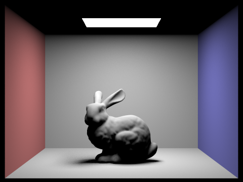


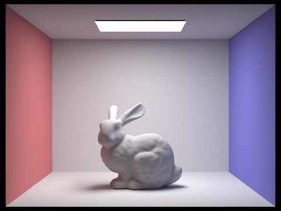
Name: Ruize Zheng | Webpage: https://cal-cs184-student.github.io/hw3-shizuku-h2o-writeup/
In this assignment I built a physically-based path tracer around a BVH-accelerated scene. I implemented
camera ray generation, ray-triangle and ray-sphere intersection, bounding-volume-hierarchy construction
and traversal, diffuse and emissive BSDFs, direct lighting with both uniform-hemisphere and light
importance sampling, multi-bounce global illumination with Russian roulette, and adaptive sampling. The
through-line is the rendering equation: every lighting estimate is a Monte Carlo integral where choosing
a good sampling density (cos-weighted BSDF samples, light samples, or adaptive pixel
samples) is what separates a noisy image from a converged one.
Camera::generate_ray maps a normalized image coordinate (x, y) onto the
camera's sensor plane at z = -1: the horizontal span is
[-tan(hFov/2), tan(hFov/2)] and similarly for vFov, so
(0,0) and (1,1) land on the bottom-left and top-right corners. The resulting
camera-space direction is normalized and rotated by the camera-to-world matrix c2w, and the
ray is clipped to [nClip, fClip].
Triangle intersection uses the Möller–Trumbore algorithm. With two triangle edges
e1 = p2 - p1 and e2 = p3 - p1, I solve for the barycentric coordinates
(u, v) and ray parameter t in one determinant computation. A ray is rejected
if u < 0, v < 0, u + v > 1, or t is outside
[min_t, max_t]; otherwise max_t is tightened to t so later
intersections are quickly rejected. The surface normal is the barycentric interpolation of the three
vertex normals: (1 - u - v) n1 + u n2 + v n3. Sphere intersection solves the quadratic
|o + t d - c|^2 = r^2 and picks the nearest valid root.
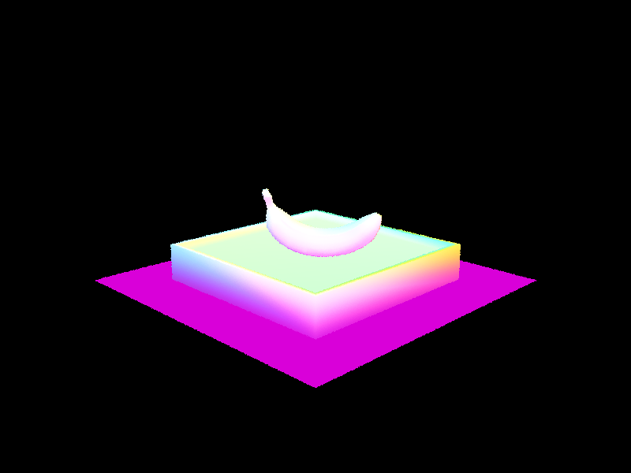
dae/keenan/banana.dae, normal shading.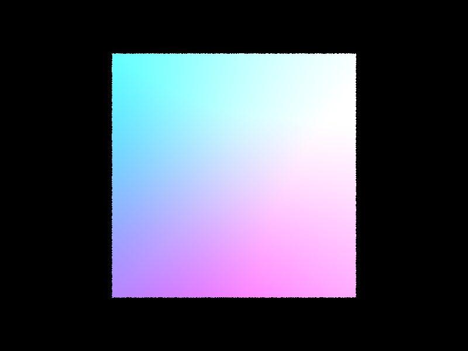
dae/simple/cube.dae, normal shading.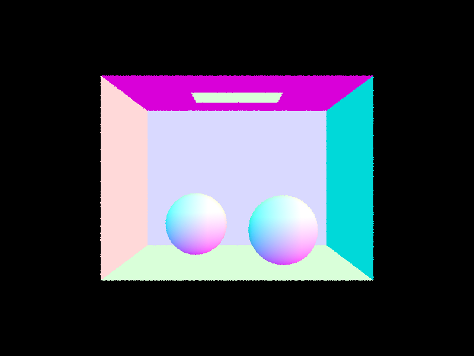
dae/sky/CBspheres_lambertian.dae, normal shading.
I build the BVH recursively. Each node owns the union bounding box of its primitives. If a node contains
at most max_leaf_size primitives it becomes a leaf (storing start and
end iterators into the primitive array). Otherwise I split along the axis of the box's
largest extent and use std::nth_element to partition the primitives by the median of their
bounding-box centroids, then recurse on the two halves. The median split always produces two non-empty
halves, so the recursion is guaranteed to terminate. Box traversal uses the slab method, and
intersect tests both children while keeping the ray's max_t so only the
nearest primitive survives.
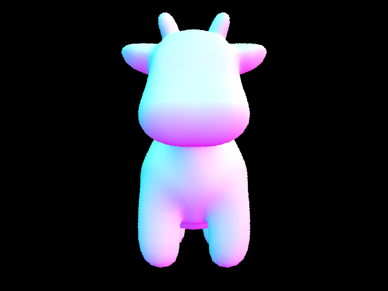
dae/meshedit/cow.dae (5,856 triangles).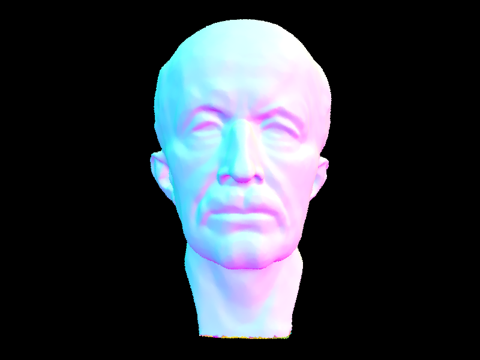
dae/meshedit/maxplanck.dae (50,801 triangles).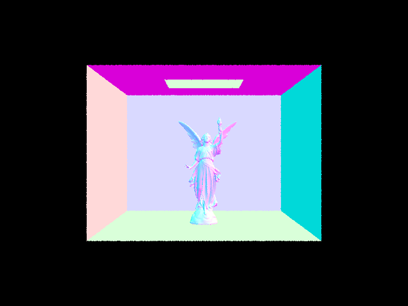
dae/sky/CBlucy.dae (133,796 triangles).
Timing comparison (normal shading, 16 threads): cow.dae took 0.0533s with the BVH versus
23.14s with naive O(n) traversal (~434× speedup); maxplanck.dae took 0.0365s versus 88.06s
(~2412×). The larger the triangle count, the more the BVH wins, because it turns the per-ray primitive
test from linear in scene size into roughly logarithmic.
DiffuseBSDF::f returns reflectance / PI, the Lambertian BRDF.
estimate_direct_lighting_hemisphere samples incoming directions uniformly on the upper
hemisphere around the surface normal, casts a shadow ray for each sample, and accumulates
emission * f * cos(theta) * 2*PI, dividing by the sample count.
estimate_direct_lighting_importance instead samples each light source directly
(sample_L), converts the returned world-space direction to object space, skips lights
behind the surface, and casts one shadow ray per sample with max_t = distToLight - EPS_F;
it accumulates L_i * f * cos(theta) / pdf. Delta lights are sampled once, area lights
ns_area_light times. one_bounce_radiance dispatches between the two based on
direct_hemisphere_sample.
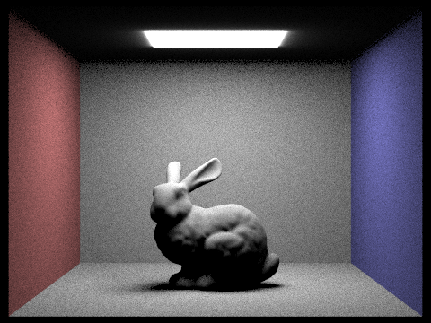
Soft shadows under light importance sampling, varying the number of samples per area light
(-l) with 1 sample per pixel:
-l 1-l 4-l 16-l 64
Uniform hemisphere sampling wastes most of its samples on directions that never hit a light, so it is far
noisier and also lacks the light's directional behavior. Importance sampling spends every sample on an
actual light, so the same sample budget produces much cleaner soft shadows; higher -l values
smooth the penumbra by averaging more points across the area light.
DiffuseBSDF::sample_f draws a cos-weighted incoming direction and returns both
that direction and its pdf. at_least_one_bounce_radiance computes the one-bounce direct
term, then samples a direction according to the surface BSDF, traces a ray in that direction, and
recursively evaluates the radiance arriving at the next hit; the recursive contribution is weighted by
f * cos(theta) / pdf and by the inverse continuation probability for Russian roulette
(cpdf = 0.7, with the first indirect bounce always traced). Accumulated mode sums every
bounce; unaccumulated mode returns only the deepest requested bounce.
CBbunny.dae, global illumination (1024 spp).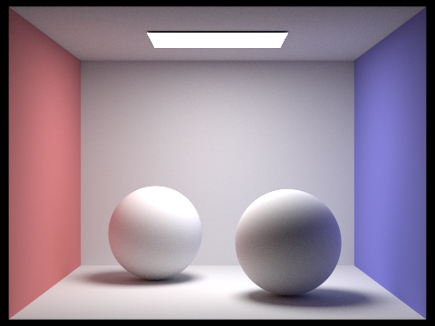
CBspheres_lambertian.dae, global illumination (1024 spp).Direct illumination only, versus indirect illumination only, for CBbunny.dae (1024 spp):
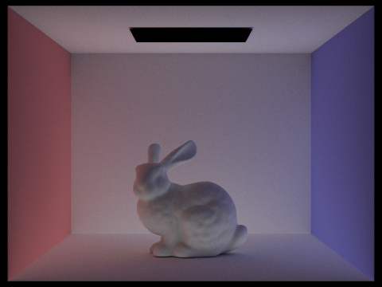
Accumulated bounces, m = 0..5:


Unaccumulated bounces (only the m-th bounce), m = 0..5:
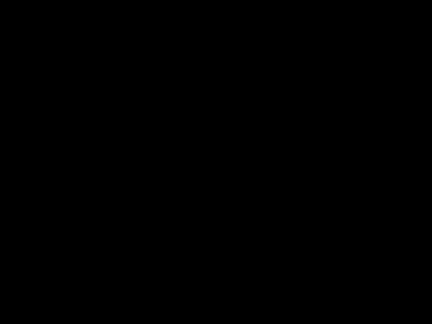
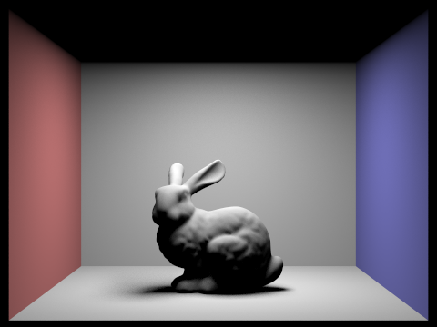
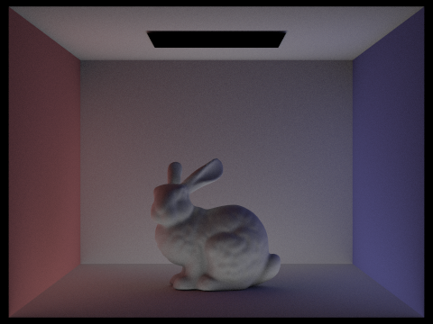
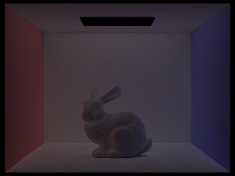
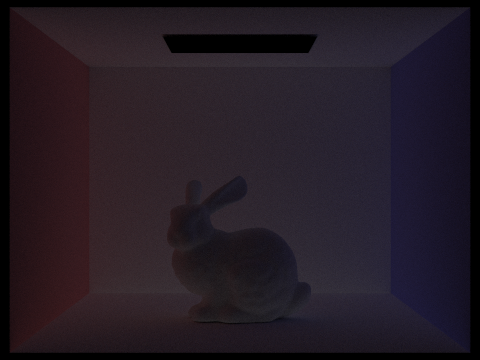
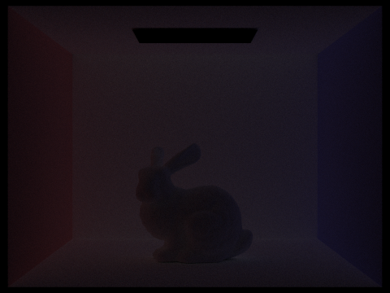
The 2nd bounce already reveals indirect light that was completely missing from rasterization/direct-only images: the shadowed side of the bunny and the box corners pick up light reflected off nearby walls. The 3rd bounce adds subtle further color bleeding. These terms are exactly what make a path-traced image look grounded compared to a one-bounce render.
Russian roulette with m = 0, 1, 2, 3, 4, 100:
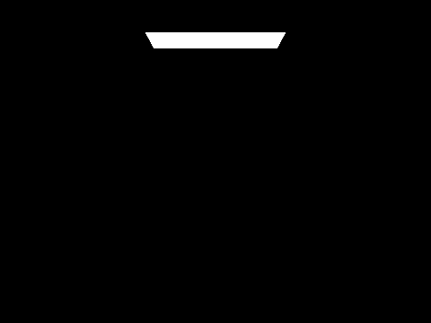

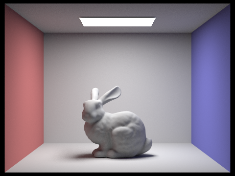

Sample-per-pixel comparison (4 light rays, CBbunny.dae):
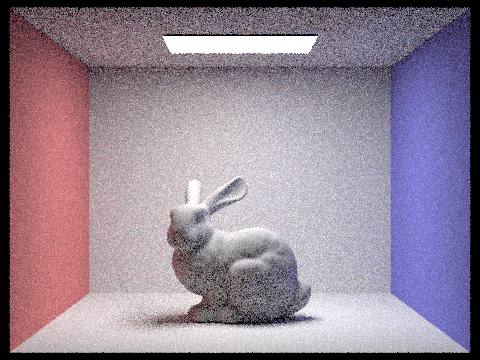
Adaptive sampling stops tracing a pixel once its estimate has converged. For each pixel I keep the sums
s1 = Σ x_k and s2 = Σ x_k^2 of the per-sample illuminance, from
which I compute the mean mu = s1 / n and variance
sigma^2 = (s2 - s1^2/n) / (n - 1). Every samplesPerBatch samples I check
whether 1.96 * sigma / sqrt(n) ≤ maxTolerance * mu (the 95% confidence interval relative
to the mean) and, if so, stop. I record the actual sample count in sampleCountBuffer so the
rate image can be generated. Below are two scenes rendered with 2048 max samples,
-a 64 0.05, 1 light sample, and max ray depth 5.
CBbunny.dae, adaptive result.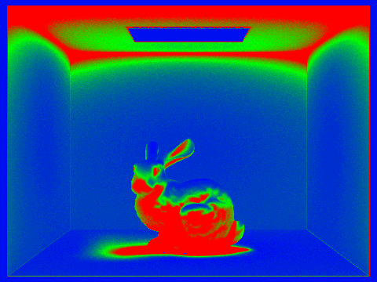
CBbunny.dae, sample-rate image.CBspheres_lambertian.dae, adaptive result.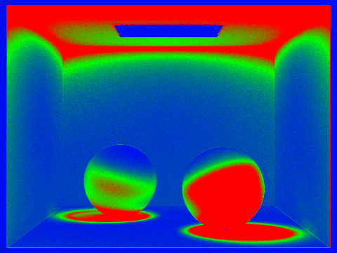
CBspheres_lambertian.dae, sample-rate image.The rate images show red where the pixel needed most of its sample budget (noisy regions such as soft shadows and indirect-only areas) and blue/green where it converged quickly (flat, directly-lit walls). This spends the render budget where it actually reduces noise.